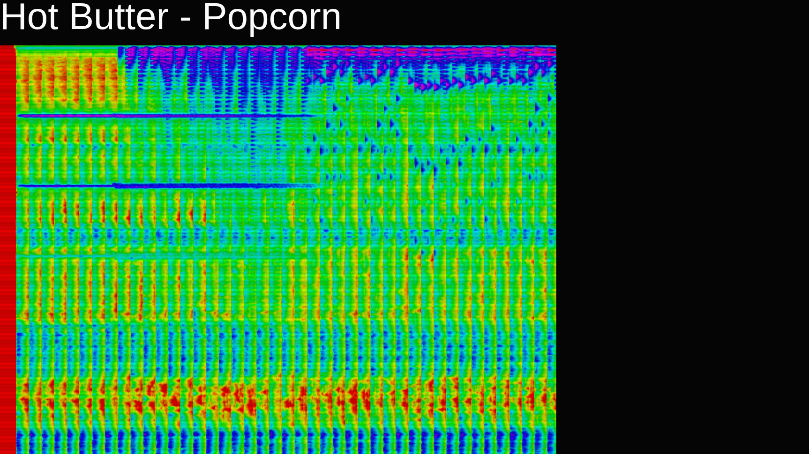
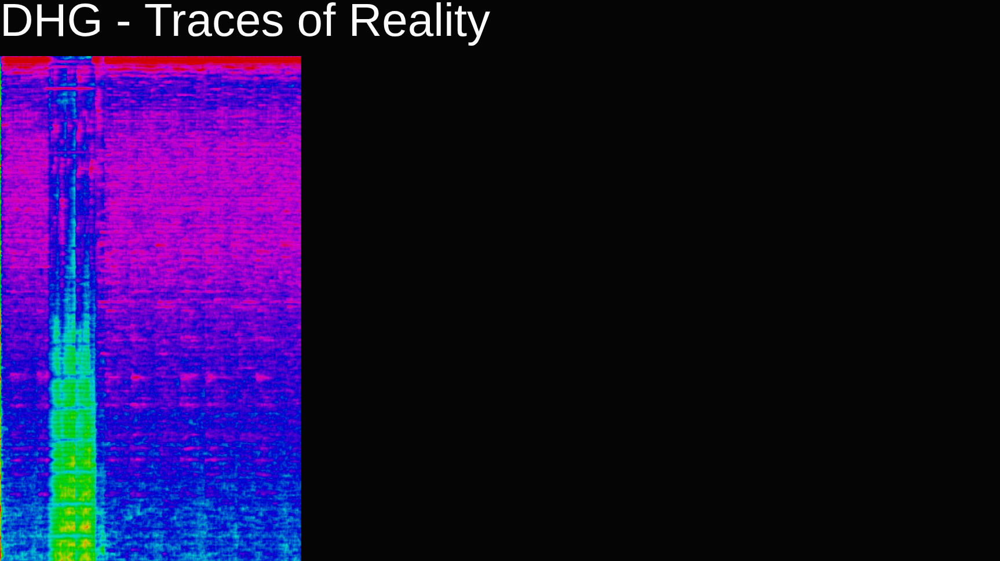
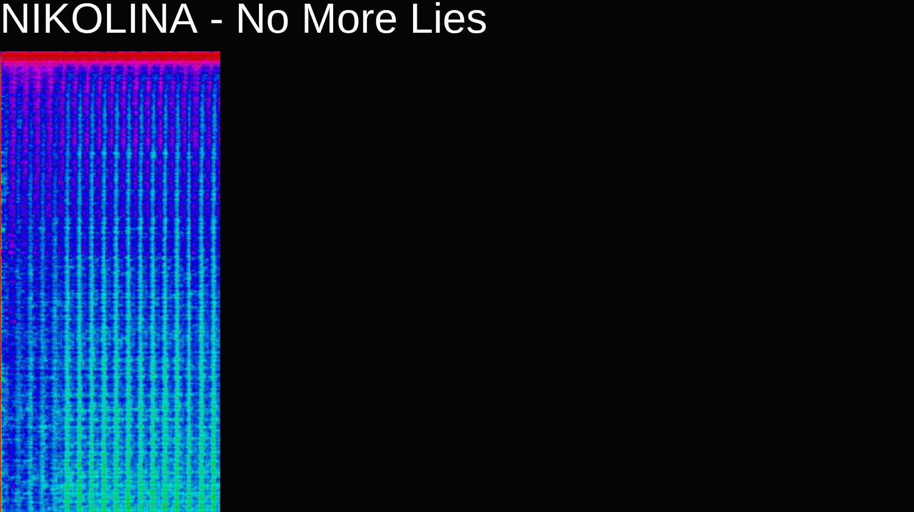
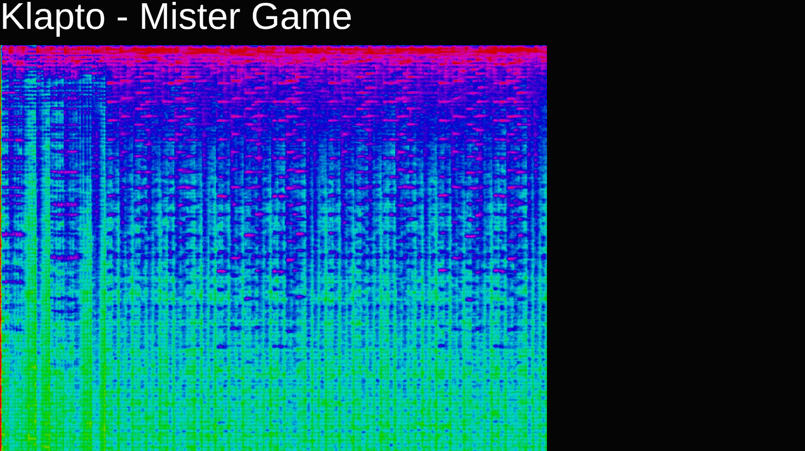
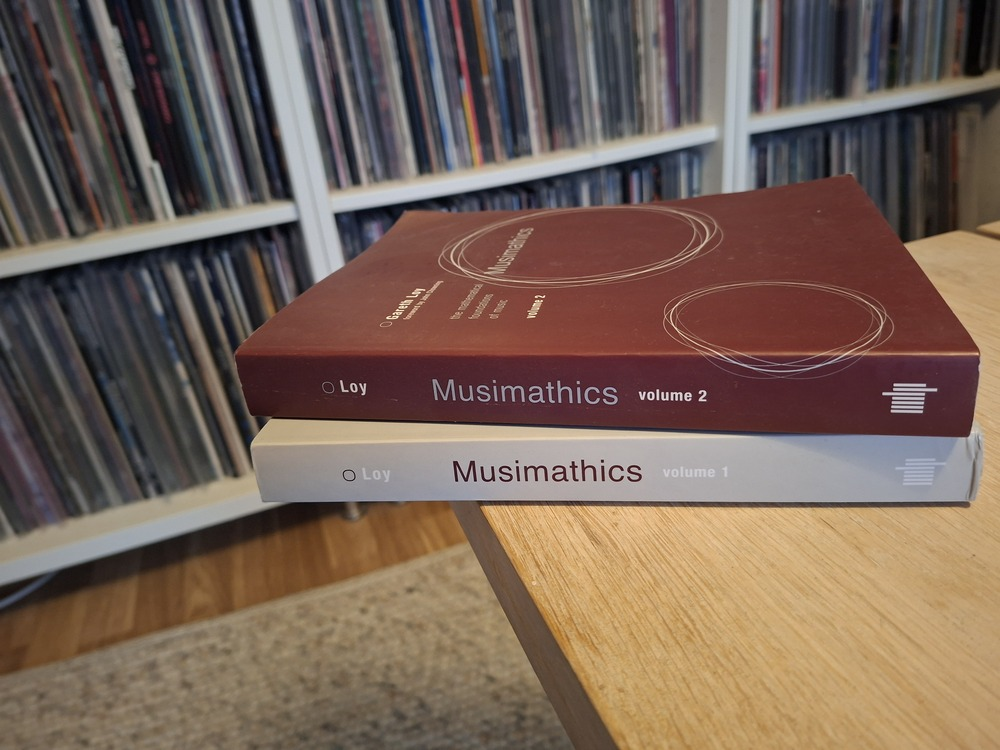

Stian Veum Møllersen / @mollerse
at NDC 2026
What is sound?
It's an actual physical phenomenon.
Waves of pressure passing through some kind of elastic material.
Because it is a physical phenomenon, we can model it.
We've got good models for things that behave like waves.
Sinusoids.
Sinusoids can be combined to create more complex waves.
If sound can be combined, can it be un-combined?
Can the paint be un-mixed?
Fourier Analysis
The hills are alive!
No, but really.
const audioContext = new AudioContext();
const FFT_SIZE = Math.pow(2,9)
let audio = new Audio("song.mp3");
audio.crossOrigin = "anonymous";
let source = audioContext.createMediaElementSource(audio);
let analyser = audioContext.createAnalyser();
analyser.fftSize = FFT_SIZE;
source.connect(analyser);
analyser.connect(audioContext.destination);
audio.play();
let frequencyData = new Uint8Array(analyser.frequencyBinCount);
analyser.getByteFrequencyData(frequencyData);
So we have a bunch of data.
Now what?
We can apply data science to the problem.
For instance spectrograms of songs:




Songs are so very different, but there are similarities.
Features can be extracted and used to tell us something interesting about a song or compare it to other songs.
Chosing the kind of feature, or the parameters of the feature matters a lot.
For instance, would you want to detect parts with high energy or the parts with silence?
There are so many things we could want to know about a piece of music.

The nice thing about something that's been studied extensively, is that there's usually available implementations of the best approaches.
meyda.js is an audio feature extraction library for JavaScript.
https://meyda.js.org/
import Meyda from "meyda";
/*
* Audio-setup exactly like before, with analyzer-node.
*/
let energy = 0;
let meydaAnalyzer = Meyda.createMeydaAnalyzer({
audioContext,
source,
bufferSize: FFT_SIZE,
featureExtractors: ["rms"],
callback: (features) => {
energy = features.rms || 0;
},
});
audio.play();
meydaAnalyzer.start();
let frequencyData = new Uint8Array(analyser.frequencyBinCount);
analyser.getByteFrequencyData(frequencyData);
Musimathics vol. 1 and 2 by Gareth Loy
meyda.js.org and a paper about meyda.
«Soundscapes: Creating Visuals with Meyda+Shaders» by Loris Mat
«Data art posters about music (streaming) data for Sony Music» by Nadieh Bremer
Thanks for listening!
Stian Veum Møllersen / @mollerse